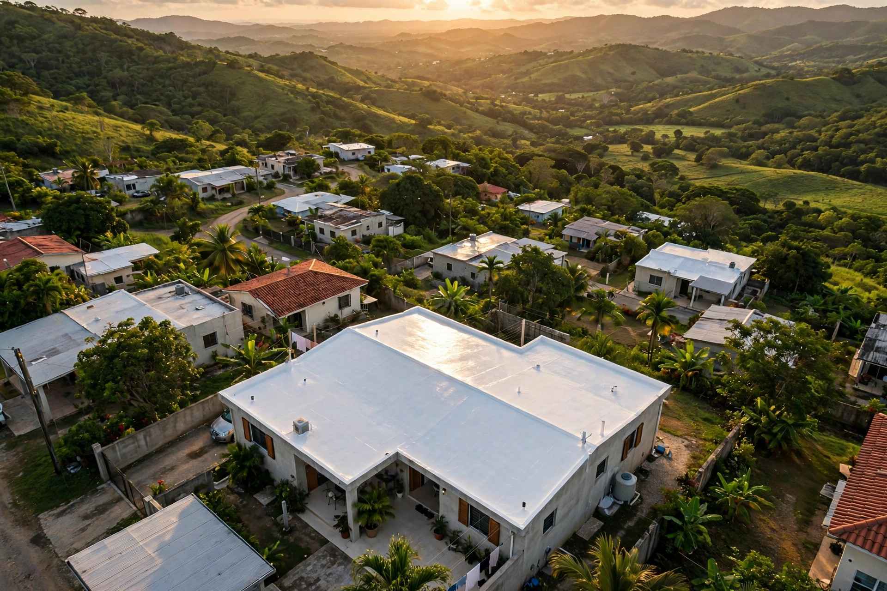
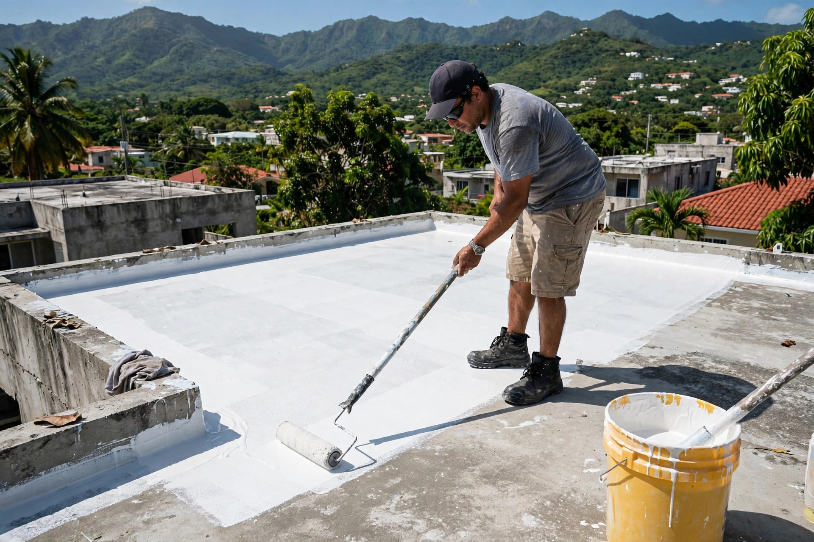
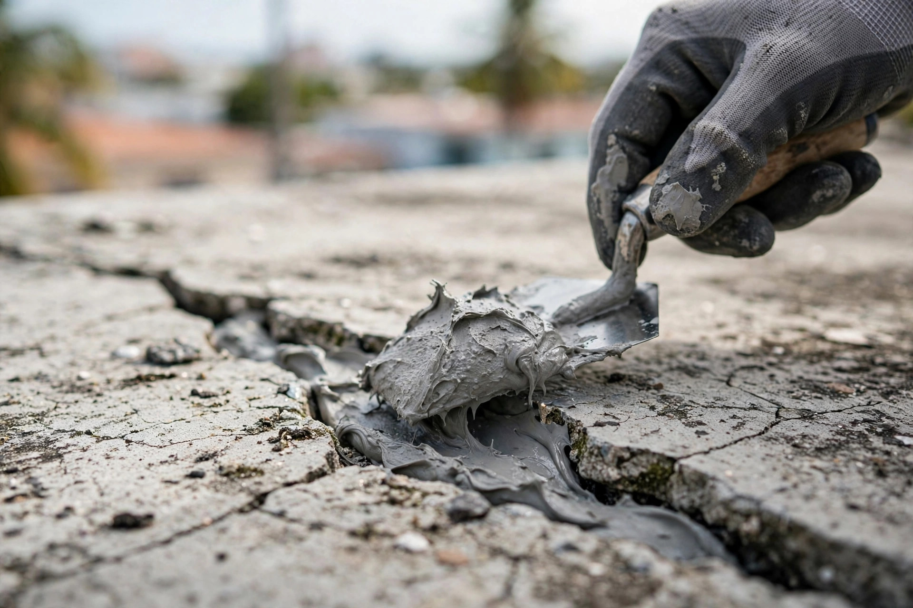
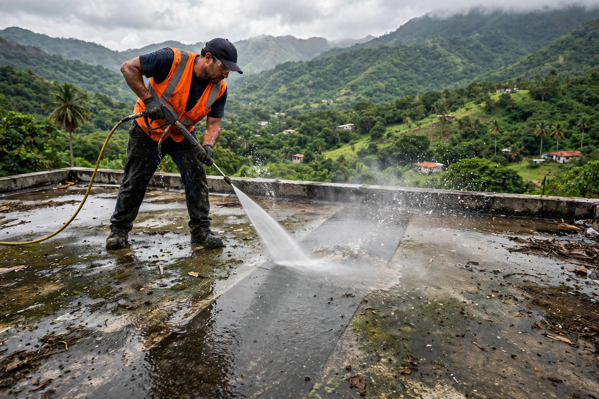

GG Services — Juan Guzmán. Sellado de techos residencial y comercial que aguanta el calor del valle y la lluvia de la temporada. Estimados gratis, trato directo.


Así se ve el oficio: preparación, reparación y sellado con acabado limpio.


Del estimado gratis al acabado final: un solo equipo, trato directo con Juan.
Techos de casas y apartamentos preparados para el sol y la lluvia del valle.
Techos de negocios y locales con sistemas de mayor cobertura.
Buscamos el origen de la gotera y lo corregimos antes de sellar.
Cotización sin costo en Caguas y los 7 pueblos del área.
Juan Guzmán trabaja el techo como si fuera el suyo: preparación completa, reparación de grietas primero y sellado parejo después. Sin atajos, sin sorpresas.
No. Los estimados son gratis en Caguas y pueblos cercanos: Gurabo, San Lorenzo, Juncos, Las Piedras, Cayey y Cidra.
Sí. GG Services trabaja sellado de techos residencial y comercial con el mismo estándar de preparación y acabado.
Se reparan primero: se sellan las grietas y se corrigen los puntos de filtración antes de aplicar el sistema de sellado final.
Por WhatsApp al 787-469-0017 o llamando al mismo número. Manda fotos de tu techo y te respondemos.
Caguas como base, y además Gurabo, San Lorenzo, Juncos, Las Piedras, Cayey y Cidra.
Cotización gratis
Completa los 3 pasos y te abrimos WhatsApp con tu solicitud lista para enviar.
Esta página la creó ManuPro. Escríbenos hoy mismo y cotiza la website profesional de tu negocio.
Cotizar por WhatsApp